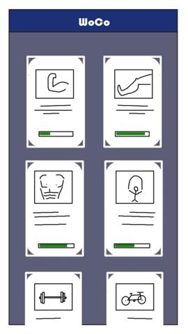
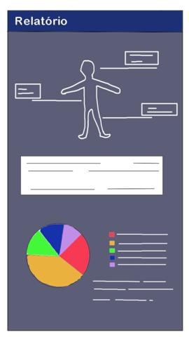

Prototipo baixafidelidade
Protótipo de Baixa Fidelidade
O protótipo de baixa fidelidade busca mostrar mediante sketches uma ideia superficial do aplicativo através de esboços de tela. Busca também demonstrar a idealização da interface e a disposição dos elementos e funcionalidades do projeto.
É uma maneira rápida e fácil de traduzir conceitos de design de alto nível em artefatos tangíveis e testáveis. POssui apenas alguns dos atributos visuais do projeto e são apresentados para verificar e testar a funcionalidade, em vez da aparência do produto.
Home
Primeiro contato do usuário com o aplicativo

Home Sidebar
Tela que dispõe as funcionalidades do aplicativo em uma barra lateral

Sobre Nós
Tela que fornece o termo de privacidade e informações internas do projeto

Listagem de Treinos
Tela que exibe informações personalizadas e/ou treinos pré-definidos

Adicionar Treino
Cadastrando exercícios para especificar e auxiliar suas atividade

Acompanhar Treino
Listagem dos Exercícios daquela sessão de exercícios

Execução do Treino
Feedback de tempo e exibição do exercício selecionado

Relatório
Conceder informações gerais sobre os dados de treino

Conclusão
No decorrer do projeto esta visão e coloração poderá ser alterada devido a atualizações de proposta e complexidade da implementação. Este modelo proposto será discutido e atualizado entre os integrantes do grupo afim de democratizar a idealização do projeto.
Versionamento de edições desta página
| Data | Autor | Descrição | Versão |
|---|---|---|---|
| 08/09/2020 | Bruno Duarte | Adicionando Protótipo de Papel | 0.1 |